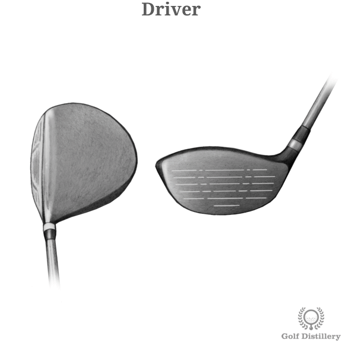
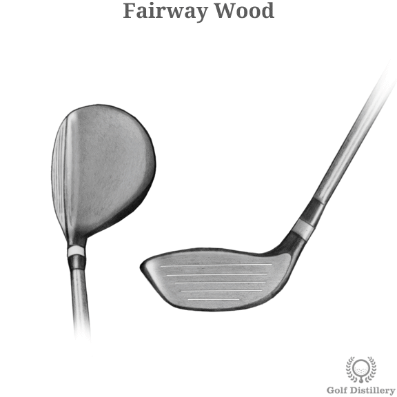
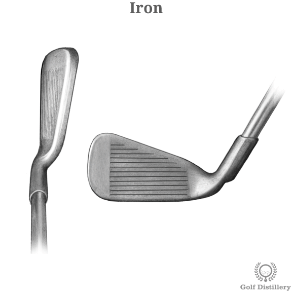
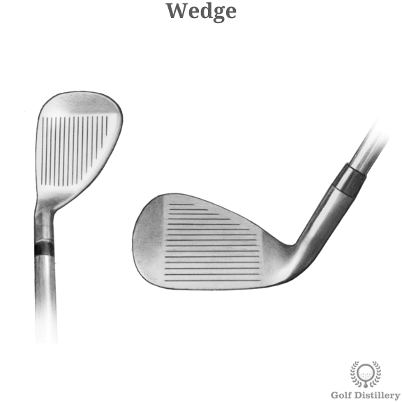
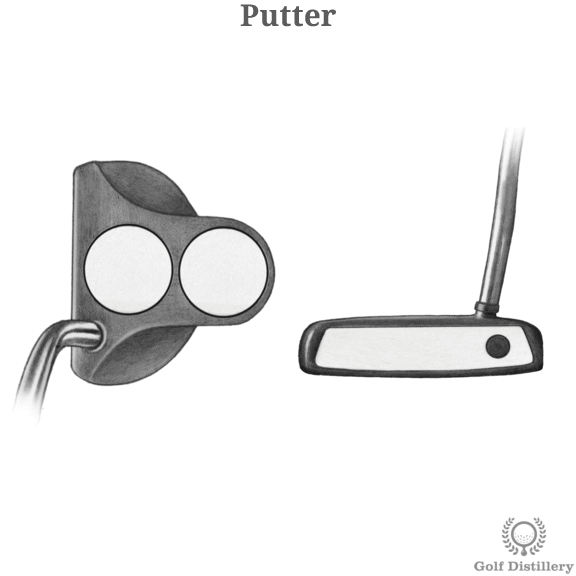

Shop for all your Golf needs
Clubs
- 
- Goes the farthest, but is also the hardest to control. Used to tee off on longer holes.
- 
- Goes almost as far as the driver, but you can hit it off the fairway, or out of the rough.
- 
- Usually used to approach the green.If you're precise with them, you'll be pretty good.
- 
- Similar to irons, but used when you are close to the green. Good for pitching and chipping.
- 
- The most boring, but also most important club. Use it to get the ball in the hole on the green.
Balls
- Tour balls:
- The newest and most expensive golf balls on the market. Might not be the best choice if you have a habit of hitting OB or in the water.
- Used Balls:
- Our collection of used balls. All are in good condition, but from various brands.
- Range Balls:
- Cheapest balls that most driving ranges provide. Don't go as far, but are good for practice.
- Practice Balls:
- Lighter material balls used to practice chipping or putting at home. Not for course use.
Clothes and Equipment
- Bags:
- Where you hold your clubs. If you like to walk, you may want a lighter bag that still holds all the essentials.
- Polos:
- General golf attire. Some nice courses may require you wear polos and or a belt.
- Range Finders:
- Will tell you how far you are from the hole.
- Shoes:
- Helps you avoid slipping during your swing.